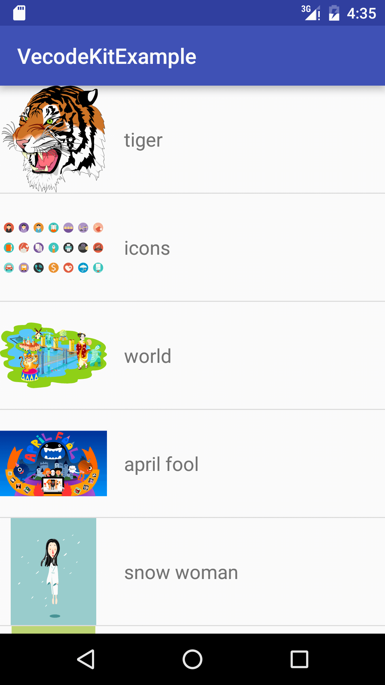

介绍
Vecode 的意思是 Vector + code，可以将矢量图片转换成绘图代码或者 svg。
到目前为止，Vecode 支持导入：
支持导出：
- Quartz code (Swift)
- Quartz code (Objective-C)
- Android graphics code
- svg 图片
- png 图片
其中 Quartz code 是 iOS 或者 Mac 平台上的绘图代码。而 Android graphics code，顾名思义，就是 Android 平台上的绘图代码。
将矢量图片转换成绘图代码后，将代码添加到项目工程中编译，运行时将图片重新绘制出来。这样随意放大缩小，图片也不会失真。
VecodeKit
我们编写了例子工程 VecodeKit，展示了如何使用导出的绘图代码。您可以在 GitHub 下载到最新的 VecodeKit 代码，也可以点击菜单项 Copy VecodeKit... 将其复制到本机中。您也可以点击菜单项 Vecode Help 随时打开这份帮助文档。
VecodeKit 包含子目录
iOS_Mac 子目录，包含一个 iOS 的例子，也包含一个 Mac 的例子，分别展示了在 Swift 语言和 Objective-C 语言下如何使用 Quartz code。

Android 子目录，包含一个 Android Studio 的工程例子，展示了如何使用导出的 Android graphics code。

在 test_swf 子目录中，您可以找到一些测试用的 swf 文件。
要获取更多 VecodeKit 和使用绘图代码的信息，请参考：